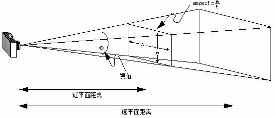
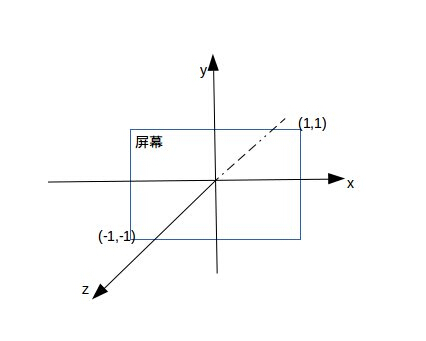
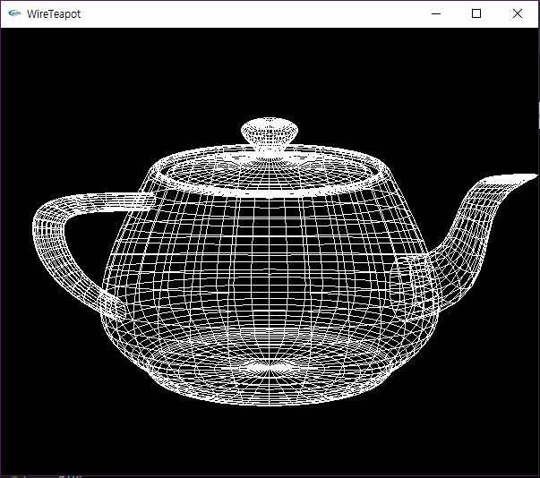

OpenGL - 显示一个简单的3D图形
在前面我们进行了2D图形的绘制，接下来，我们将步入3D图形的世界，在绘图之前，我们首先弄清楚几个新的函数，弄懂了这几个函数我们才能方便地绘制出我们的3D图形。它们分别是gluPerspective、gluLookAt
1. void gluPerspective(GLdouble fovy,GLdouble aspect,GLdouble zNear,GLdouble zFar)
- fovy: 视角的大小(相机的焦距), 如果设置为0, 相当闭上眼睛, 什么也看不到, 如果为180, 相当于进入物体内部。一般设置为60即可。
- aspect: 实际窗口的纵横比, 即x/y, 一般都是要按照窗口比例来, 否则看到的图形和实际图形就会不一样了。
- zNear: 表示近处的裁面。
- zFar，表示远处的裁面。
gluPerspective这个函数指定了观察的视景体在世界坐标系中的具体大小，一般而言，其中的参数aspect应该与窗口的宽高比大小相同。比如说，aspect=2.0表示在观察者的角度中物体的宽度是高度的两倍，在视口中宽度也是高度的两倍，这样显示出的物体才不会被扭曲。


2. void gluLookAt(GLdouble eyex,GLdouble eyey,GLdouble eyez,GLdouble centerx,GLdouble centery,GLdouble centerz,GLdouble upx,GLdouble upy,GLdouble upz)
该函数定义一个视图矩阵，并与当前矩阵相乘。
- 第一组eyex, eyey,eyez 相机在世界坐标的位置
- 第二组centerx,centery,centerz 相机镜头对准的物体在世界坐标的位置
- 第三组upx,upy,upz 相机向上的方向在世界坐标中的方向
为了更好理解, 也可以把相机想成你的脑袋
- 第一组数据就是脑袋的位置
- 第二组数据就是眼睛看的物体的位置
- 第三组就是头顶朝向的方向（因为你可以歪着头看同一个物体）
在这里，我们就涉及到一个十分重要的概念，坐标系。在3D绘图中，坐标系是右手系，如果x轴指向我们的右侧，那么y则指向上侧，z轴指向屏幕外。如下图所示。

现在有下面的示例代码:
#include
void display(void) {
//清除缓冲区颜色
glClear(GL_COLOR_BUFFER_BIT);
//指定即将画的物体为白色
glColor3f(1.0, 1.0, 1.0);
//原点在坐标中心
glLoadIdentity();
//从(0,0,0.5)的位置朝(0,0,0)位置看, 相机为头朝上方向
gluLookAt(0.0, 0.0, 5.0, 0.0, 0.0, 0.0, 0.0, 1.0, 0.0);
//画线状茶壶
glutWireTeapot(2);
//清除缓冲区刷新
glutSwapBuffers();
}
void reshape(int w, int h) {
//定义视口大小
glViewport(0, 0, (GLsizei)w, (GLsizei)h);
//投影显示
glMatrixMode(GL_PROJECTION);
//坐标原点在屏幕中心
glLoadIdentity();
//操作模型视景
gluPerspective(60.0, (GLfloat)w / (GLfloat)h, 1.0, 20.0);
glMatrixMode(GL_MODELVIEW);
}
int main(int argc, char** argv) {
//初始化
glutInit(&argc, argv);
//设置显示模式
glutInitDisplayMode(GLUT_DOUBLE | GLUT_RGB);
//初始化窗口大小
glutInitWindowSize(600, 500);
//定义左上角窗口位置
glutInitWindowPosition(100, 100);
//创建窗口
glutCreateWindow(argv[0]);
//清除颜色缓冲区
glClearColor(0.0, 0.0, 0.0, 0.0);
//显示函数
glutDisplayFunc(display);
//窗口大小改变时的响应
glutReshapeFunc(reshape);
//循环
glutMainLoop();
return 0;
}
运行结果如下:

一些常用的绘图函数，直接用类库函数来绘制即可:
- void glutWireSphere(GLdouble radius, GLint slices, GLint stacks); 线框球
- void glutSolidSphere(GLdouble radius, GLint slices, GLint stacks); 实心球
- void glutWireCube(GLdouble size); 线框立方体
- void glutSolidCube(GLdouble size); 实心立方体
- void glutWireTorus(GLdouble innerRadius, GLdouble outerRadius, GLint nsides, GLint rings); 线框圆环
- void glutSolidTorus(GLdouble innerRadius, GLdouble outerRadius, GLint nsides, GLint rings); 实心圆环
- void glutWireIcosahedron(void); 线框20面体
- void glutSolidIcosahedron(void); 实心20面体
- void glutWireOctahedron(void); 线框8面体
- void glutSolidOctahedron(void); 实心8面体
- void glutWireTetrahedron(void); 线框4面体
- void glutSolidTetrahedron(void); 实心4面体
- void glutWireDodecahedron(GLdouble radius); 线框12面体
- void glutSolidDodecahedron(GLdouble radius); 实心12面体
- void glutWireCone(GLdouble radius, GLdouble height, GLint slices, GLint stacks); 线框圆锥体
- void glutSolidCone(GLdouble radius, GLdouble height, GLint slices, GLint stacks); 实心圆锥体
- void glutWireTeapot(GLdouble size); 线框茶壶
- void glutSolidTeapot(GLdouble size); 实心茶壶